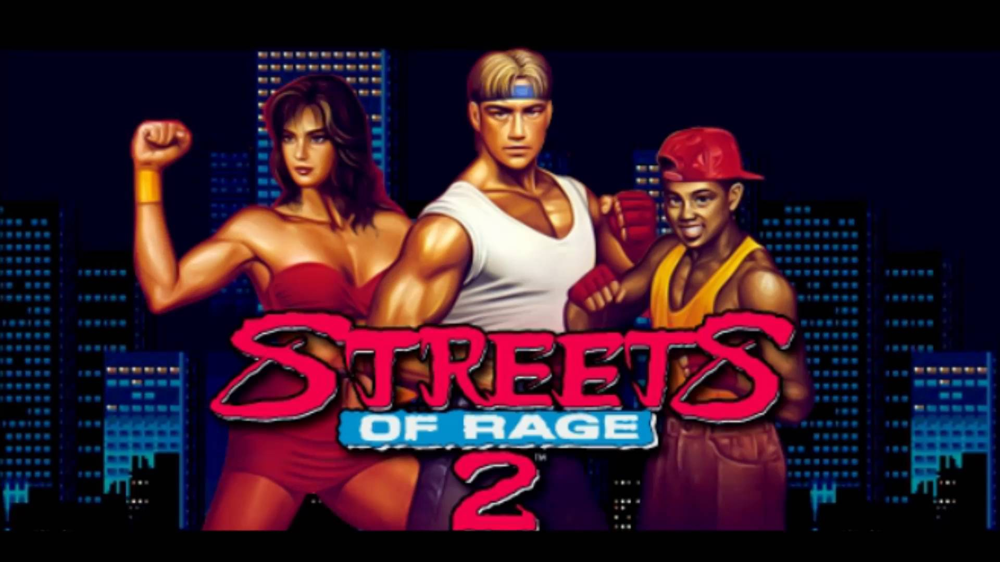

Streets of Rage 2
imagem do jogo Streets of Rage 2
Streets of Rage 2 (ベア・ナックルII 死闘への鎮魂歌 Bare Knuckle II: The Requiem of the Deadly Battle?) é um jogo eletrônico de beat 'em up que foi desenvolvido e publicado pela Sega para o Mega Drive. Streets of Rage 2 segue o estilo 2D de Streets of Rage, porém a qualidade gráfica está bastante melhorada, com um estilo totalmente novo de desenho tanto de personagens quanto das fases em si. A trilha sonora foi desenvolvida pelo músico Yuzo Koshiro, o mesmo que desenvolveu a trilha sonora do primeiro jogo.
Streets of Rage 2 é a continuação de Streets of Rage, sendo que seu enredo basicamente conta que no passado os jovens ex-policiais Axel Stone, Adam Hunter e Blaze Fielding comemoravam a vitória contra o sindicato criminoso, após um ano de sua queda. Axel virou guarda costas e Blaze agora trabalha como professora de dança, porém Adam resolve se juntar novamente a polícia e passa a morar numa pequena casa junto com seu irmão mais novo.
Um dia Axel recebe um telefonema desesperado de Eddie "Skate" Hunter (também conhecido como Eddie "Sammy" Hunter) dizendo que ao chegar na pequena casa, ela estava toda revirada e destruída. O desaparecimento de Adam marca o começo do pesadelo, em poucos dias o sindicato estava de volta às ruas, agora totalmente renovados e com muitos novos lutadores criminosos, desde ninjas armados até mesmo motociclistas que arremessam bombas.
Axel contacta Max, seu velho amigo, Blaze e Sammy (Skate), e decidem se unir para destruir novamente a organização criminal do sindicato, resgatar Adam e restabelecer a ordem e a paz.
Até mesmo as variações coloridas de inimigos e mestres recebem novos nomes, como se fossem na verdade guerreiros diferentes e não variações.
As fases em si também foram modificadas, desta vez possuindo mais de uma parte. Um exemplo disso é a própria fase inicial, que começa descendo um beco em direção a um bar (enfrentando o sub-mestre Jack, um punk gozador que é um exímio atirador de facas, ao fim desta primeira parte, que termina na porta deste bar), logo depois há uma mudança de cena e o jogador agora está dentro do tal bar (terminando por enfrentar a sensual Electra, que está posando como uma cantora). Ao fim, no beco de trás do bar (terceira parte desta fase), o jogador enfrenta o barman (que na verdade é um criminoso).